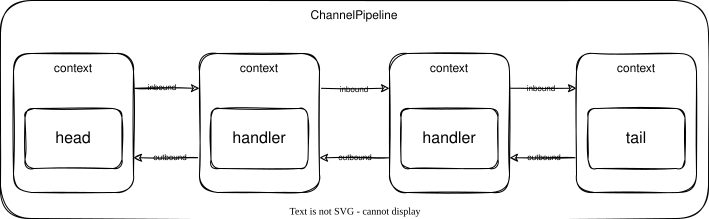

Channel Pipeline
ChannelPipeline 是 otavia 中 channel 数据的核心处理链。它与 Netty 的 ChannelPipeline 基本相似，但在与 Actor 模型的集成方式上有重要区别。

结构
ChannelPipelineImpl 维护一个由 ChannelHandlerContextImpl 节点组成的双向链表，带有两个哨兵节点：
HeadHandler ⇄ Handler[0] ⇄ Handler[1] ⇄ ... ⇄ Handler[N] ⇄ TailHandler
- HeadHandler：头部哨兵。将出站操作桥接到 channel 的传输方法。
- TailHandler：尾部哨兵。将入站事件桥接到 channel 的
Inflight系统。 - 用户 handler：插入在 Head 和 Tail 之间，按顺序处理数据。
事件传播
Inbound（Head → Tail）
入站事件从 HeadHandler 向 TailHandler 方向流动：
ActorThread的IoHandler处理 IO 就绪事件 → 读取原始字节并进入 pipeline- Pipeline 通过 handler 链处理数据
- Channel 调用
pipeline.fireChannelRead(data)→ HeadHandler - 每个 handler 处理数据并调用
ctx.fireChannelRead(data)传递给下一个 TailHandler.channelRead()→channel.onInboundMessage(msg)→ 进入 Inflight 系统
常见的入站事件：channelRead、channelReadComplete、channelRegistered、channelActive、channelInactive、channelExceptionCaught
Outbound（Tail → Head）
出站事件从最后一个 handler 向 HeadHandler 方向流动：
- Actor 调用
channel.write(msg)→pipeline.write(msg) - Pipeline 从最后一个 handler 向后扫描
- 每个 handler 处理并调用
ctx.write(msg)传递给前一个 HeadHandler.write()→channel.writeTransport(msg)→ 写入AdaptiveBufferHeadHandler.flush()→channel.flushTransport()→ 发送给 IO Handler
常见的出站事件：write、flush、bind、connect、register、close、read
HeadHandler
头部哨兵将 pipeline 桥接到 channel 的传输方法：
| 方法 | 目标 |
|---|---|
bind |
channel.bindTransport(local, promise) |
connect |
channel.connectTransport(remote, local, promise) |
register |
channel.registerTransport(promise) |
read |
channel.readTransport() → ioHandler.read(channel, plan) |
write |
channel.writeTransport(msg) → 写入 channelOutboundAdaptiveBuffer |
flush |
channel.flushTransport() → 将出站队列排空到 IO Handler |
close |
channel.closeTransport(promise) |
TailHandler
尾部哨兵将 pipeline 桥接到 channel 的 Inflight 系统：
| 方法 | 行为 |
|---|---|
channelRead(msg) |
调用 channel.onInboundMessage(msg, false) — 将解码消息路由到 Inflight |
channelExceptionCaught(cause, id) |
调用 channel.onInboundMessage(cause, true, id) — 将异常路由到 Inflight |
channelReadComplete |
无操作（忽略） |
channelActive/Inactive |
无操作（忽略） |
这是关键的桥接：当数据通过 pipeline 到达时，TailHandler 将其传递给 AbstractChannel.onInboundMessage，后者将其路由到 Inflight/Stack 系统供 Actor 处理。
executionMask 优化
每个 ChannelHandler 有一个 executionMask — 一个 27 位字段，每一位对应一个 handler 方法（通过 @Skip 注解和 ChannelHandlerMask.mask(handlerClass) 计算）。Pipeline 维护一个全局 executionMask，是所有 handler mask 的位或。
扫描 handler 之前：
findContextInbound(mask)：检查pipeline.executionMask & mask。为零则无 handler 处理此事件 — 直接跳到TailHandler。findContextOutbound(mask)：同样检查，无匹配则跳到HeadHandler。
这避免了大多数 handler 使用默认 @Skip 实现时的无效线性扫描。
AdaptiveBuffer 集成
当 handler 需要 buffer 时（codec handler 的 hasInboundAdaptive/hasOutboundAdaptive），pipeline 自动分配 AdaptiveBuffer 实例：
- 第一个需要出站 buffer 的 handler 获得通道级
channelOutboundAdaptiveBuffer（共享） - 后续 handler 获得自己的堆分配
AdaptiveBuffer - 入站 buffer：第一个 handler 获得新的堆 buffer；head 上下文持有
channelInboundAdaptiveBuffer
这在 codec handler 之间创建了零拷贝 buffer 链。
添加 Handler
// 在 channel 初始化期间
override protected def initChannel(channel: Channel): Unit = {
channel.pipeline.addLast(new MyDecoder())
channel.pipeline.addLast(new MyEncoder())
channel.pipeline.addLast(new MyBusinessHandler())
}
Handler 顺序很重要 — 入站数据按插入顺序流过 handler（先添加 = 先处理）。
与 Netty 的关键区别
在 Netty 中，所有业务逻辑必须封装在 pipeline 内的 ChannelHandler 中。如果入站事件未被处理就到达 TailHandler，会被忽略。
在 otavia 中，TailHandler 将未处理的入站消息路由到 channel 的 Inflight 系统，以 ChannelStack 的形式传递给 ChannelsActor。这意味着 pipeline 的职责更加集中在字节级处理（编码、解码、TLS、压缩），而业务逻辑由 Actor 通过 Stack 机制处理。